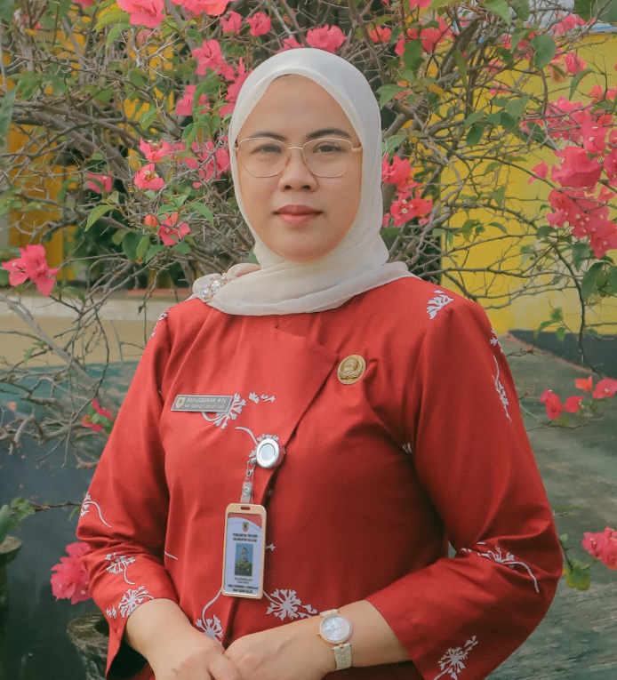

Sambutan Kepala Sekolah

Selamat datang di website resmi SMAN Banua Kalimantan Selatan (Bilingual Boarding School). Kami berkomitmen untuk memberikan pendidikan unggulan bagi siswa-siswi kami untuk menjadi generasi penerus bangsa yang berkarakter, berdaya saing global, dan berakhlak mulia.
Visi & Misi
Visi
“TERWUJUDNYA LULUSAN BERKARAKTER UNGGUL, BERDAYA SAING, BERLANDASKAN IMTAQ, DAN BERORIENTASI LINGKUNGAN”.
Misi
- Menyiapkan lulusan yang mempunyai prestasi di tingkat regional, nasional dan internasional.
- Menyiapkan lulusan yang menguasai bahasa asing dan Ilmu Pengetahuan dan Teknologi.
- Menyiapkan lulusan yang dapat melanjutkan ke pendidikan kedinasan atau perguruan tinggi dalam dan luar negeri.
- Menumbuhkembangkan jiwa kewirausahaan dengan mengedepankan prinsip kreativitas.
- Menumbuhkembangkan karakter lulusan yang religius, disiplin, mandiri dan berwawasan kebangsaan.
- Menyiapkan lulusan yang memiliki kepedulian terhadap lingkungan alam, sosial, fisik dan kultural dengan prinsip gotong royong.
- Menciptakan lingkungan sekolah yang berwawasan adiwiyata, bersih, hijau, sehat, asri, aman dan nyaman.